金总的算法课
算法课笔记
9月14日 Lead-in
本课程主要内容：分支、动态规划、贪心、随机算法、近似算法、NP-完全性理论
课堂习题
LeetCode 440题目描述：给定整数 \(n\) 和 \(k\)，找到 \(1\) 到 \(n\) 中字典序第 \(k\) 小的数字。
注意：\(1 \leq k \leq n \leq 10^9\) 。
解题思路
如图，字典序构成了一棵十叉树，该树的每一层代表具体某一位置的数字（如，个十百千万）。比如根节点代表最高位的数字，子树的根节点代表低一位的数字，直到叶子节点表示个位的数字。如此，构造出的树的高度（根节点高度为0）应为（ \(\lfloor lg(n+1) \rfloor + 1\)）。!这里高度还存在一点问题，准确说是9棵十叉树
但是由于 \(n\) 大小的限制，构成的并不是一个满十叉树。比如示例中 \(1\) 只有 \([10,11,12,13]\) 四个孩子。
该问题转化为求解区间 \([1,n+1)\) 计数的问题，无需构建真实的树。若当前根的数字为 \(l\) ，则右侧相邻兄弟结点为 \(l+1\) ，计算树结点区间 \([l,l+1)\) 的结点个数（ 记作 \(cnt\)） ，计数时一层一层向下，需要递归（迭代也行）地计算子树的结点个数。若当前树结点区间的结点个数 \(cnt \le k\) ，则说明目标数字不在当前区间，而在右侧区间 \([l+1,l+2)、[l+2,l+3)...\) 之一中，则 \(k = k-num\) ，对右侧相邻区间计数；若当前区间的结点个数 \(cnt > k\) ，则说明目标数字在当前结点区间\([l,l+1)\) 内，则应在当前区间的子树下寻找，也就是以 \(l\) 为根的子树下寻找。重复上述过程，直至找到目标数字（即 \(k=0\) 时的数字）。
使用游标“指针” \(cur\) 存储当前指向的数字，刚开始为 \(1\) ，根据下图树的结构，游标在兄弟结点间向右侧区间移动，\(cur = cur + 1\) ；若向孩子自己的子树（第一个孩子结点移动，则 \(cur = cur \times 10\) 。
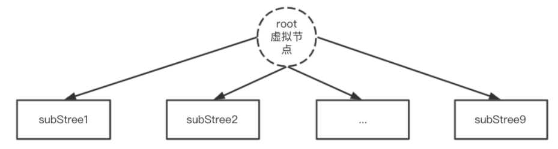
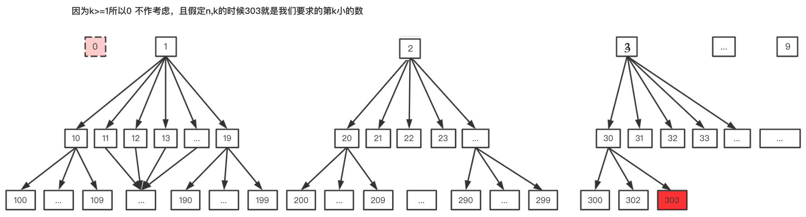
class Solution {
public:
int findKthNumber(int n, int k) {
int cur = 1;
k -= 1; // 减去根节点 1
while(k > 0){
// 计算cur(10叉树的一个根节点)到cur + 1之间的数字个数
int cnt = countNode(n,cur,cur+1);
if(k >= cnt){ //cur游标在树上同一层向右移动
k -= cnt;
cur += 1;
}else{
k -= 1; // 去除当前根,向下探索子树
cur *=10; // 游标向下移动,孩子节点代表的数值需要乘以10
}
}
return cur;
}
int countNode(int n, long l, long r){
//小细节,注意溢出,min函数强制转换一下long
int cnt = 0;
while(l<=n){
cnt += min(long(n+1), r) - l; // 计数区间为左闭右开[l,r)
l*=10;
r*=10;
}
return cnt; //返回该结点下的node数
}
};变式：!下次问一下，给忘记了
给定\(n\)个不相同的整数\(a_1,a_2,...,a_n\)和\(k\)，\(max\{a_i\} < 10000\)。找到\(a_1\)到\(a_n\)中字典序第\(k\)小的数字。注意：\(1 \leq k \leq n\)
提示：桶排序、堆排序、快速搜索、线性时间选择
9月21日 Mathematical Basis
评估算法的执行效率：经验（Empirical）与理论（Theoretical）
渐进分析符号
渐近上界记号 $ $
若存在两个正常数 \(c\) 和 \(n_0\) ，使得对所有的 \(n \geq n_0\) ，都有： \(f(n) \le c \times g(n)\) ，则称 \(f(n) = \Omicron(g(n))\) 。
渐近下界记号 \(\Omega\)
若存在两个正常数 \(c\) 和 \(n_0\) ，使得对所有的 \(n \geq n_0\) ，都有： \(f(n) \ge c \times g(n)\) ，则称 \(f(n) = \Omega(g(n))\) 。
紧渐近界记号 \(\Theta\)
若存在三个正常数 \(c_1\)、\(c_2\) 和 \(n_0\) ，使得对所有的 \(n \geq n_0\) ，都有： \(c_1 \times g(n) \ge f(n) \ge c_2 \times g(n)\) ，则称 \(f(n) = \Theta(g(n))\) 。
非紧上界记号 $ $
\(\omicron(g(n))=\{f(n) |C1\}\) ，其中 \(C1\) : 对于任何正常数 \(c > 0\)，存在正数\(n_0 > 0\)使得对所有\(n \ge n_0\) 有\(0 \le f(n) < c \times g(n)\) 。
等价于 \(\lim_{ n \to \infty}{f(n)/g(n) \to 0}\)
非紧下界记号 \(\omega\)
\(\omega(g(n))=\{f(n) |C2\}\) ，其中 \(C2\) : 对于任何正常数 \(c > 0\)，存在正数\(n_0 > 0\)使得对所有\(n \ge n_0\) 有\(0 \le c \times g(n) < f(n)\) 。
等价于 \(\lim_{ n \to \infty}{f(n)/g(n) \to \infty}\)
Master Theorem ★
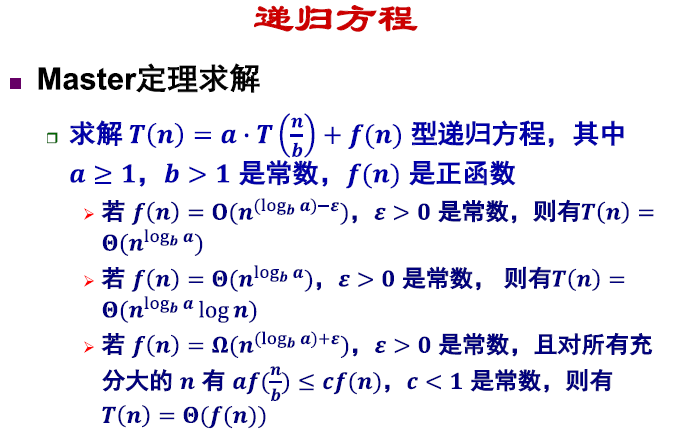
主要目的是比较等号右侧的两项函数那个作为“主导”，精简如下。
\(\begin{aligned} \text { If } T(n)=a T\left(\left\lceil\frac{n}{b}\right\rceil\right)+O\left(n^{d}\right) \text { (for constants} \; a>0, b>1, d \geq 0), \text { then: } \end{aligned}\)
$T(n)=\left\{\begin{array}{ll}O(n^{d}) & d>{b} a \ O(n^{d} n) & d={b} a \ O(n^{{b} a}) & d<{b} a \end{array}.$ . （证明参见：brilliant Coursera ）
等待写master定理求解的例子
9月28日 Devide And Conquer Algorithm
==10.10课结束补==
分治算法原理
三步走：Devide-Conquer-Combine
递归方程：\(T(n) = aT(n/b)+D(n)+C(n)\) ，右侧为分治复杂度、问题划分划分复杂度和合并复杂度。
二分搜索
见《算法整理》lower_bound写法。
大整数乘法
\(n\) 位K进制整数X和Y相乘。
解决方法：
- 模拟小学乘法：最简单的乘法竖式手算的累加型；
- 分治乘法：最简单的是Karatsuba乘法，一般化以后有Toom-Cook乘法；
- 快速傅里叶变换FFT：（为了避免精度问题，可以改用快速数论变换FNTT），时间复杂度 \(O(N lgN lglgN)\) 。具体可参照Schönhage–Strassen algorithm；
- 中国剩余定理：把每个数分解到一些互素的模上，然后每个同余方程对应乘起来就行；
- Furer's algorithm：在渐进意义上FNTT还快的算法。不过好像不太实用，本文就不作介绍了。大家可以参考维基百科Fürer's algorithm。
参考博客
矩阵乘法
求第k小元素问题
寻找最近点对
FFT - 快速傅里叶变换
寻找凸包
思考题 1
LeetCode 240 搜索二维矩阵 II
使用二分的方式削减搜索空间，分别对\(row\)维度和\(colume\)维度进行二分，使用lower_bound的二分写法来求\(row\)和\(col\)方向上的\(target\)下界（第一个大于等于\(target\)的数的位置是\(l\)）。需要特别判断的是
class Solution { //196 ms 10.6s MB
public:
bool searchMatrix(vector<vector<int>>& matrix, int target) {
if(matrix.size()==0 || matrix[0].size()==0) return false;
return binarySearch(matrix, matrix.size(), 0, target);
}
bool binarySearch(vector<vector<int>>& matrix, int row, int col, int target){
int next_row, next_col;
int l = 0, r = row;
while(l < r){ //[0,r)
int mid = l + (r - l) / 2;
if(matrix[mid][col] >= target){
r = mid;
}else {
l = mid + 1;
}
}
if(l < row && matrix[l][col]==target) return true;//判断row方向的下界数字是否是target
next_row = l; // 求lower_bound
if(next_row == 0) return false; // 判断row是否越界，即row方向数组为空
l = col, r = matrix[0].size();
while(l < r){
int mid = l + (r - l) / 2;
if(matrix[next_row-1][mid]>=target){
r = mid;
}else{
l = mid+1;
}
}
if(l == matrix[0].size()) return false; //判断col是否越界,即col方向数组为空
next_col = l;
return binarySearch(matrix, next_row, next_col,target);//左下角顶点坐标至右上角顶点
}
};//从左下角开始，每次删除一行或一列
思考题 2
LeetCode - 4 - 寻找两个正序数组的中位数 - 官方题解
思路：要实现 \(\Omicron(log(m+n))\) 的复杂度，首先考虑二分。中位数的作用是将一组有序样本划分为两个相等长度的部分，所以该问题可以转化为求一个 \(m+n\) 长度的数组的第 \(k\) 小数（如果下标是0始，则对应下标为 \(k-1\) 的数），其中 \(k = (m+n+1)/2\) （总数为奇数，下标0始）或者 \(k=(m+n)/2,k=(m+n)/2+1\)（总数为偶数，下标0始，取平均）。
那么神奇的操作来了，此处，我们二分的对象是区间长度 \(k\) ，每次从数组 \(A\) 和数组 \(B\) 中取 \(k/2\) 区间长度的数（下标0始，所以取到\(k/2-1\)），然后比较 \(A[k/2-1]、B[k/2-1]\) 的大小，分以下三种情况讨论区间的取舍问题。
- \(A[k/2-1] < B[k/2-1]\) ，舍弃区间 \(A[0:k/2-1]\)
- \(A[k/2-1] > B[k/2-1]\) ，舍弃区间 \(B[0:k/2-1]\)
- \(A[k/2-1] = B[k/2-1]\) ，可归入（1）或（2）
Q：为什么比较两个有序区间的最大值就可以直接舍去其中一个区间呢？
A：已知\(A[0:k/2-1]、B[0:k/2-1]\) 两段区间共计 \(k\) 个数字，以（1）为例，\(A[k/2-1]\)较小，所以在它之前的数字都不可能是第 \(k\) 小的，可舍去，由于\(A[k/2-1] < B[k/2-1]\)，区间 \(B[0:k/2-1]\) 中至少存在一个数字大于 \(A[k/2-1]\) ，即 \(A[k/2-1]\) 最多是第 \(k-1\) 大的，舍去 \(A[0:k/2-1]\) 不会影响寻找第 \(k\) 小的数字。那么，当\(A[k/2-1] < B[k/2-1]\) ，说明第 \(k\) 个数位于 \(A\) 数组的第 \(k / 2\) 个数后半段，或者 \(b\) 数组的 第 \(k / 2\) 个数前半段，问题规模缩小了一半，然后递归处理子问题就行。
class Solution { //这不是我写的，我晚点按照这个思路试着重写
public:
int getKthElement(const vector<int>& nums1, const vector<int>& nums2, int k) {
/* 主要思路：要找到第 k (k>1) 小的元素，那么就取 pivot1 = nums1[k/2-1] 和 pivot2 = nums2[k/2-1] 进行比较
* 这里的 "/" 表示整除
* nums1 中小于等于 pivot1 的元素有 nums1[0 .. k/2-2] 共计 k/2-1 个
* nums2 中小于等于 pivot2 的元素有 nums2[0 .. k/2-2] 共计 k/2-1 个
* 取 pivot = min(pivot1, pivot2)，两个数组中小于等于 pivot 的元素共计不会超过 (k/2-1) + (k/2-1) <= k-2 个
* 这样 pivot 本身最大也只能是第 k-1 小的元素
* 如果 pivot = pivot1，那么 nums1[0 .. k/2-1] 都不可能是第 k 小的元素。把这些元素全部 "删除"，剩下的作为新的 nums1 数组
* 如果 pivot = pivot2，那么 nums2[0 .. k/2-1] 都不可能是第 k 小的元素。把这些元素全部 "删除"，剩下的作为新的 nums2 数组
* 由于我们 "删除" 了一些元素（这些元素都比第 k 小的元素要小），因此需要修改 k 的值，减去删除的数的个数
*/
int m = nums1.size();
int n = nums2.size();
int index1 = 0, index2 = 0;
while (true) {
// 边界情况
if (index1 == m) {
return nums2[index2 + k - 1];
}
if (index2 == n) {
return nums1[index1 + k - 1];
}
if (k == 1) {
return min(nums1[index1], nums2[index2]);
}
// 正常情况
int newIndex1 = min(index1 + k / 2 - 1, m - 1);
int newIndex2 = min(index2 + k / 2 - 1, n - 1);
int pivot1 = nums1[newIndex1];
int pivot2 = nums2[newIndex2];
if (pivot1 <= pivot2) {
k -= newIndex1 - index1 + 1;
index1 = newIndex1 + 1;
}
else {
k -= newIndex2 - index2 + 1;
index2 = newIndex2 + 1;
}
}
}
double findMedianSortedArrays(vector<int>& nums1, vector<int>& nums2) {
int totalLength = nums1.size() + nums2.size();
if (totalLength % 2 == 1) {
return getKthElement(nums1, nums2, (totalLength + 1) / 2);
}
else {
return (getKthElement(nums1, nums2, totalLength / 2) + getKthElement(nums1, nums2, totalLength / 2 + 1)) / 2.0;
}
}
};NP完全性
P与NP
P类问题可以用多项式时间的确定性算法进行判定或求解。（多项式时间可解）
Polynomial
NP类问题可用多项式时间的非确定性算法进行判定或求解。（多项式时间可验证）
Non-deterministic Polynomial
判定问题：仅要求回答"yes"与"no"(证比求易) \(P \subseteq NP\)
所有NP 问题都是判定问题，回答 yes 或 no
经典问题 (NP-completeness )
SAT 问题 (Boolean Satisfiability) - 第一个NP-C
最大团问题 (Maximum Clique)
图着色问题 (Graph Coloring)
哈密顿回路问题 (Hamiltonian Cycle)
TSP 问题 (Traveling Salesman)
顶点覆盖问题 (Vertex Cover)
最长路径问题 (Longest Path)
子集和问题 (Sum of Subset)

若某个NP完全问题多项式时间可解，则所有NP问题均可多项式时间求解，从而有P=NP。
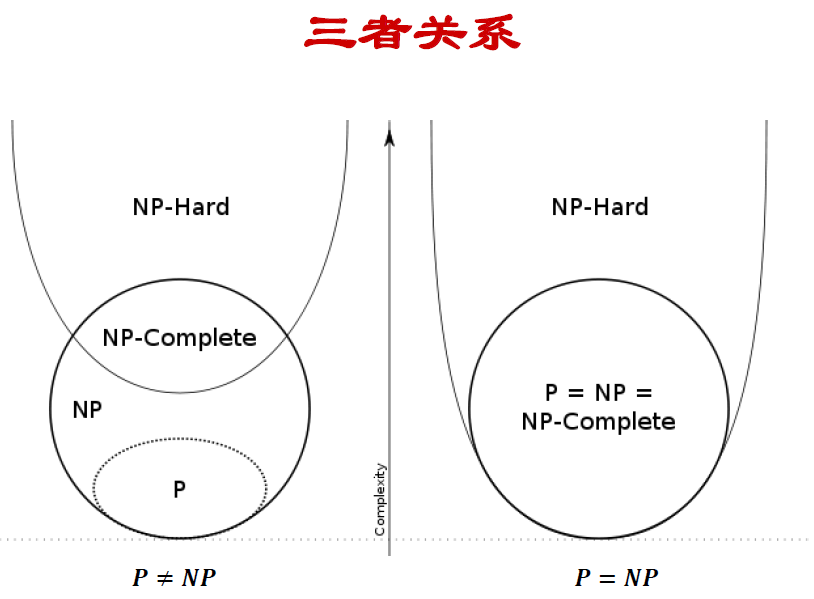
规约 Reduction
一个问题A可以归约为问题B的含义是，可用问题B的解法解决问题A，或者说，问题A可以“变成”问题B；举个例子，一元一次方程求解可以归约化为一元二次方程求解。（B的复杂度大于等于A的复杂度）
近似算法
经典问题：顶点覆盖，集合覆盖，旅行商问题，子集和问题，随机和线性规划。
定义：能够给出一个优化问题的近似优化解的算法，主要解决优化问题（最大化和最小化）
评价指标（近似度）：Ratio Bound，相对误差。
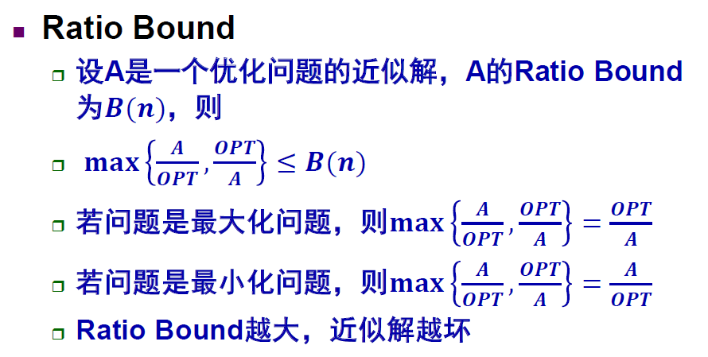
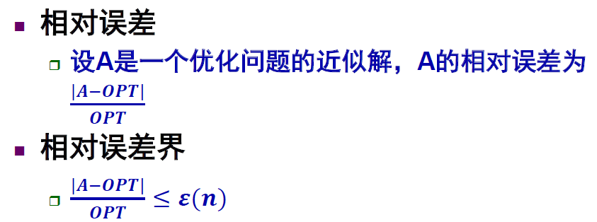
满足 \(\epsilon(n) \le B(n)-1\) (最小化问题时\(\epsilon(n) = B(n)-1\))，只要求出了RB就可以得出相对误差。
参考资料 [1]
顶点覆盖
选取若干个点组成集合A，其所连接的边可以把改图的所有点都囊括，希望|A|尽可能地小。
近似的方法是随机选取一条边\((u,v)\)，删除与u或v相连的边，将每一条边的两个端点加入A，重复直到无边可删，由于每次都会加入两个点加入A，所以近似比为2。
可以用线性规划来做，原问题可以转化为0-1整数规划问题，但是可以适当放宽条件，是的\(x(v)\)取值为浮点数。（整数规划是NP完全的，线性规划是多项式可解的）
集合覆盖问题
有限集合\(U=\{1,2,...,n\}\)，子集和的集合\(S=\{ s_1, s_2, ...,s_m\}\) , \(s_i \subseteq U\) ，求集合\(A\subseteq S\) ,满足元素完全覆盖U.
近似的方法是每次迭代选择能覆盖最多未被覆盖元素的子集。
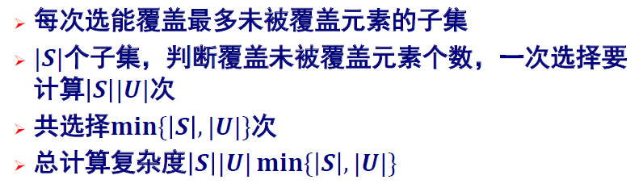
旅行商问题
给定一个完全无向图G=(V,E)，其每一边(u,v)∈E有一非负整数费用c(u,v)，要找出G的最小费用哈密顿回路。
近似算法需利用一个性质（三角不等式）：费用函数\(c\)通常意义下具有三角不等式性质，即对任意的3个顶点\(u,v,w∈V\)，有：\(c(u,w)≤c(u,v)+c(v,w)\)。
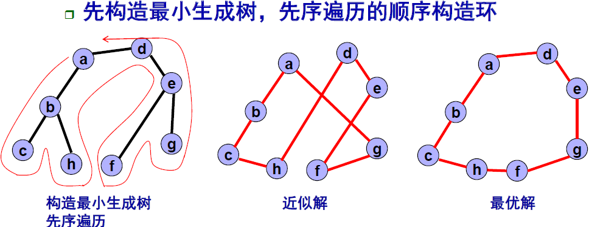
子集和问题
\(S=\{x_1,x_2,...,x_n\}\)是一个正整数的集合，t是一个正整数。子集和问题判定是否存在S的一个子集\(S_1\)，使得\(S_1\)中的元素和等于t。
Max-3CNF
随机算法
随机算法是一种使用概率和统计方法在其执行过程中对于下一步计算做出随机选择的算法。
随机算法分类
随机数值算法、Monte Carlo算法、Las Vegas算法、Sherwood算法
随机数值算法
主要用于数值问题求解，往往输出近似解，且精确度与执行时间成正比。
e.g. 计算\(\pi\)（正方形与四分之一圆、投针实验计算）、计算积分（强大数定律）
Mente Carlo算法
主要用于需要准确解的问题，算法可能给出错误的解，且获得精确解的概率与算法执行时间成正比。
e.g. 求主元素（一半以上的元素都是\(x\)）MC算法执行\(k\)次，算法发生错误的概率为\(2^{(-k)}\) 参考资料 非随机算法 （传统算法就是对每一个数字都去从头到尾遍历一遍，很傻，所以复杂度是\(\Omicron(n^2)\)）、判断字符串是否相等（去指纹，错判率）、字符串匹配、素数测试（Fermat小定理）
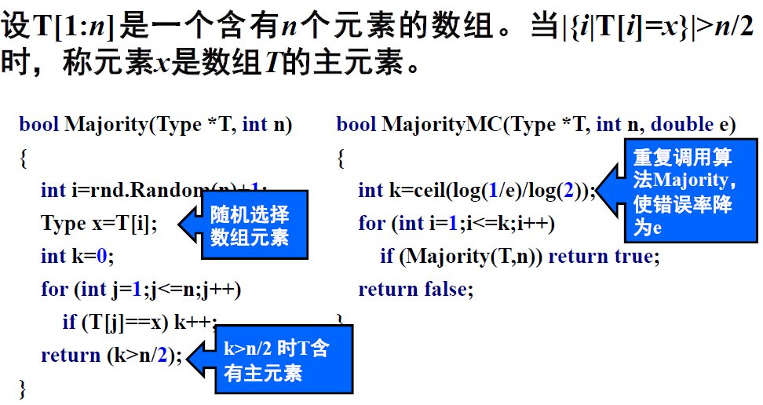
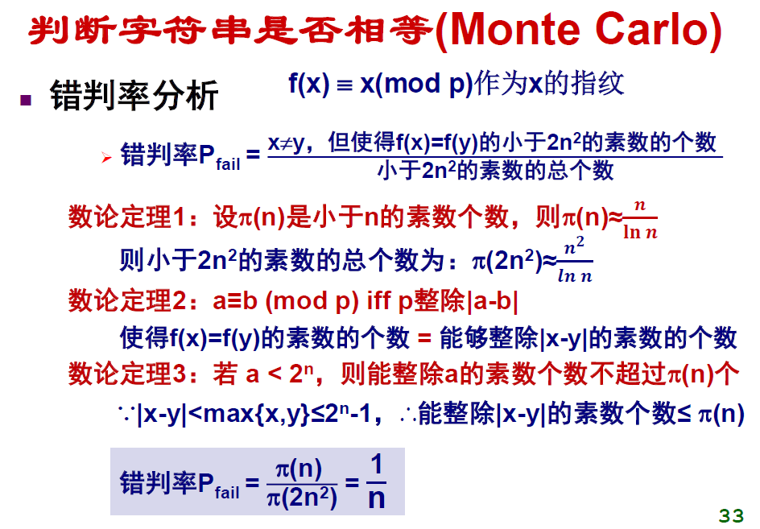
Sherwood算法
一定可求一个正确解，确定算法的最坏与平均复杂性差别很大，加入随机性即得到Sherwood算法。作用是消除最坏行为和特定实例的联系。
e.g. 快速排序，每次随机选取一个基准数字。
Las Vegas算法
一旦找到一个解，该解一定是正确的，且找到解的概率与执行时间成正比，增加对问题反复求解次数，可使求解无效的概率任意小。
e.g. 求第\(k\)小元素2（若以等概率方法从\(n\)个数中随机取数，则该算法比较次数的期望不超过\(4n\)）
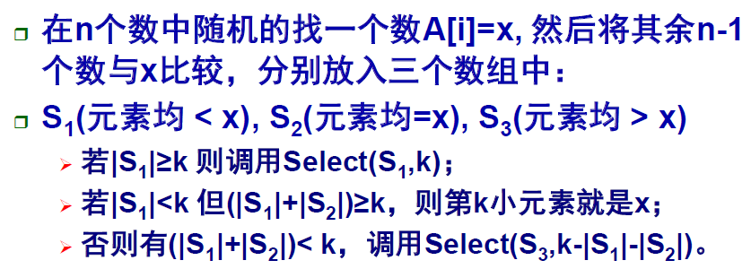
本博客所有文章除特别声明外，均采用 CC BY-SA 4.0 协议 ，转载请注明出处！